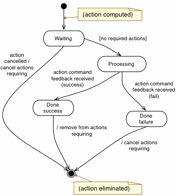

org.aslab.om.ecl.action.Action
org.aslab.om.metacontrol.action.ComponentAction
org.aslab.om.ecl.action.Action
org.aslab.om.metacontrol.action.ComponentAction
|
|||||||||||
| PREV CLASS NEXT CLASS | FRAMES NO FRAMES | ||||||||||
| SUMMARY: NESTED | FIELD | CONSTR | METHOD | DETAIL: FIELD | CONSTR | METHOD | ||||||||||
java.lang.Object
public class ComponentAction
this class is the internal representation of an action in the ComponentsECL, consisting basically of the action command and attributes with additional info, such as the component spec it addresses (target) and action_list that must be completed before this one is executed.
This class follows the following state machine:
* 
| Field Summary |
|---|
| Fields inherited from class org.aslab.om.ecl.action.Action |
|---|
command |
| Constructor Summary | |
|---|---|
ComponentAction(CompGoalAtomTracker target,
ComponentDifference difference)
This constructor actually encodes the inverse model for action_list on components |
|
| Method Summary | |
|---|---|
void |
failureModel(ActionFeedback feedback)
this method encodes the model of actions for components regarding what can be inferred from their feedback this is too Ros specific, so it should be moved somewhere else Ros-specific and invoked from here |
CompGoalAtomTracker |
getTarget()
|
void |
print()
for debugging purposes |
ActionResult |
processResult(ActionFeedback feedback)
processes the feedback received from the PlantAPI about the execution of this action propagating its consequences to depending actions |
boolean |
timeOut()
the timeout for component actions consists of the action not reaching a SUCCESS status before ACTION_TIMEOUT this method sets the action in failure in that case |
| Methods inherited from class org.aslab.om.ecl.action.Action |
|---|
addDependency, execute, getId, getStatus, isPending |
| Methods inherited from class java.lang.Object |
|---|
equals, getClass, hashCode, notify, notifyAll, toString, wait, wait, wait |
| Constructor Detail |
|---|
public ComponentAction(CompGoalAtomTracker target,
ComponentDifference difference)
target - TODO eliminate? use info from difference?difference - a difference about components from which to generate the action| Method Detail |
|---|
public CompGoalAtomTracker getTarget()
public void print()
public ActionResult processResult(ActionFeedback feedback)
processResult in class ActionAction.processResult(org.aslab.om.ecl.action.ActionFeedback)public boolean timeOut()
Action.timeOut()public void failureModel(ActionFeedback feedback)
feedback - the feedback received for this action
|
|||||||||||
| PREV CLASS NEXT CLASS | FRAMES NO FRAMES | ||||||||||
| SUMMARY: NESTED | FIELD | CONSTR | METHOD | DETAIL: FIELD | CONSTR | METHOD | ||||||||||